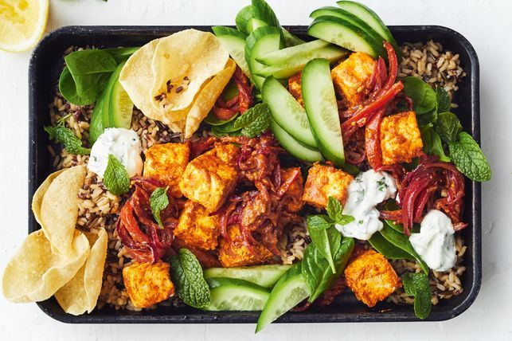

Tandoori Paneer with Salad and Raita
Prep-Time: 9 mins
Cook-Time: 8 mins
Servings: 4
Ingredients:
Steps:
-
Combine the tandoori paste and 1 tbs yoghurt in a bowl, then add
the paneer and stir to coat.
-
Heat 1 tbs coconut oil in a non-stick frying pan over medium-high
heat.
Cook onion and capsicum, which must be stired
for 5 minutes or until softened, then add the paneer mixture and
remaining oil.
Cook and stir for about 2 minutes, then
add 2 tbs water and cook for a further minute or until golden and
heated through.
-
Meanwhile, combine the mint and the remaining yoghurt in a bowl
and season.
-
Divide the rice, spinach, cucumber and paneer among serving
plates.
Serve with raita, pappadums and lemon wedges.